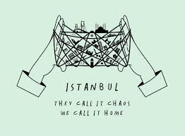
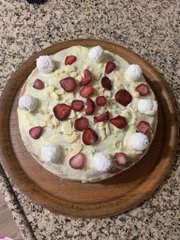

Ekin Sarıyıldız
Hello everyone! My name is Ekin. I am 24 years old. I just graduated from Koç University with a degree of Industrial Engineering. In October I'm going to start my masters in Technical University of Munich.
Facts About Me
I'm from Istanbul,Turkey.

I love to cook and bake. Here's the recent birthday cake I made for my cousin.

I love travelling. I've been in 23 countries so far. I hope to see all the world someday.
I love movies. Here's my letterboxd account if you'd like to know what I watch.
I like making songlists. Check my Spotify
According to MBTI Personality Test. I am an INFP.
My surname means "Yellow Star" in Turkish.
My Social Media
My Instagram: @ekinsariyildiz
My Facebook: Ekin Sarıyıldız
My Linkedin: Ekin Sarıyıldız